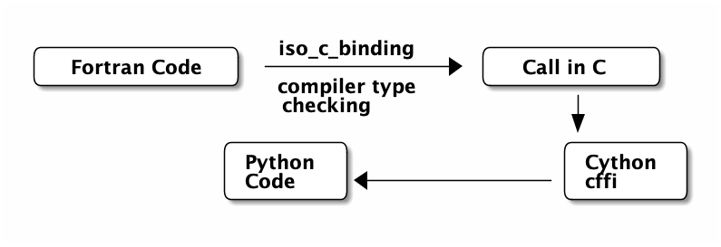

f2py: Two Decades Later
Rohit Goswami .and. Ralf Gommers .and. Melissa Mendonca .and. Pearu Peterson
Created: 2021-09-24 Fri 01:07
Brief Introduction
Hello!
- Find me here: https://rgoswami.me
- Who?
- Rohit Goswami MInstP
- Doctoral Researcher, University of Iceland, Faculty of Physical Sciences
- Rohit Goswami MInstP


Logistics
- All contents are hosted on GitHub
- Slides are in
presentations/fortranCon2021/quansightF2PY
- Slides are in
- Questions are welcome anytime
Programming Languages
Motivation
“If a program or package (the words are used interchangeably) is to have a long life and to be of wide application in its field, it is essential for it to be easily moved from one machine to another.
It used to be common to dismiss such movement with the statement, ‘There is no such thing as a machine-independent program.’
Nonetheless, a great many packages do now move from one machine to another”[lyonUsingAnsFortran1980]
–> Through the magic of automated coding and standards
Language Standards
“The standard is the contract between the compiler writer and the application developer.”[clermanModernFortranStyle2012]

Changing Standards
character(10) BLAH*8 character*8 :: BLAH_ONE(10) character(8) :: BLAH_ONE(10)
#!/usr/bin/env python print("Hello World") print "Hello World"

F77 ∉ F90 always


Fortran, C, Python
- F2003
- Introduced the
ISO_C_BINDING - F2008
C_PTRforvoid *and more- F2018
- Brought interop for exotic Fortran features which via
C descriptors - Interop
- Described in great detail on fortran90.org:

F2PY
History
- Developed by Pearu Peterson [petersonF2PYToolConnecting2009]
- July 9, 1999
f2py.py–> Fortran to Python Interface Generator (FPIG)- January 22, 2000
f2py2e–> Fortran to Python Interface Generator, 2nd edition.- July 19, 2007
numpy.f2py–> f2py2e moved to NumPy project. This is current stable code of f2py.
- Used extensively for F77
Design
- A best effort wrapper
- Specifications via
.pyfor inline comments - Not a compiler
- Can rewrite code :)
- Specifications via
Explorations in F77
Fibonacci
C FILE: FIB1.F SUBROUTINE FIB(A,N) C CALCULATE FIRST N FIBONACCI NUMBERS INTEGER N REAL*8 A(N) DO I=1,N IF (I.EQ.1) THEN A(I) = 0.0D0 ELSEIF (I.EQ.2) THEN A(I) = 1.0D0 ELSE A(I) = A(I-1) + A(I-2) ENDIF ENDDO END C END FILE FIB1.F
f2py -m fib -c fib1.f python -c "import fib; import numpy as np; a=np.zeros(7); fib.fib(a); print(a); exit();"
Up the magician’s sleeve
- Generated files
mkdir blah f2py -m fib -c fib1.f --build-dir blah tree blah blah ├── blah │ └── src.macosx-10.9-x86_64-3.9 │ ├── blah │ │ └── src.macosx-10.9-x86_64-3.9 │ │ ├── fortranobject.o │ │ └── fortranobject.o.d │ ├── fibmodule.o │ └── fibmodule.o.d ├── fib1.o └── src.macosx-10.9-x86_64-3.9 ├── blah │ └── src.macosx-10.9-x86_64-3.9 │ ├── fortranobject.c │ └── fortranobject.h └── fibmodule.c 7 directories, 8 files
Complexity
wc -l fortranobject.c fortranobject.h fibmodule.c
1107 fortranobject.c
132 fortranobject.h
372 fibmodule.c
1611 total
- NumPy Distutils
from numpy.distutils.core import Extension, setup fibby = Extension(name = 'fib', sources = ['fib1.f']) if __name__ == "__main__": setup(name = 'fib', ext_modules = [ fibby ])
Which can then be built simply with:
python setup.py build ag -g .so # build/lib.macosx-10.9-x86_64-3.9/fib.cpython-39-darwin.so
- Not fun for non
pythonprojects
- Not fun for non
Modernization
Meson and f2py
project('test_builds', 'c', version : '0.1') add_languages('fortran') py_mod = import('python') py3 = py_mod.find_installation() py3_dep = py3.dependency() incnp = run_command(py3, ['-c', 'import os; os.chdir(".."); import numpy; print(numpy.get_include())'], check : true ).stdout().strip()
inc_np = include_directories(incnp) py3.extension_module('fib1', 'fib1.f', 'fib1module.c', 'fortranobject.c', include_directories: inc_np, dependencies : py3_dep, install : true)
Fortran-C-NumPy
Modern Fortran
module fib1 use iso_c_binding implicit none contains subroutine fib(a,n) bind(c,name='c_fib') integer(c_int), intent(in), value :: n integer(c_int) :: i real(c_double) :: a(n) do i=1, n if (i==1) then a(i) = 0.0d0 else if (i==2) then a(i) = 1.0d0 else a(i) = a(i-1) + a(i-2) end if end do end subroutine end module fib1
NumPy-C I: Boilerplate
#ifndef PY_SSIZE_T_CLEAN #define PY_SSIZE_T_CLEAN #endif /* PY_SSIZE_T_CLEAN */ #include "Python.h" #include "numpy/ndarrayobject.h" #include "numpy/ufuncobject.h" static PyMethodDef FibbyMethods[] = { {NULL, NULL, 0, NULL} }; // Declare void c_fib(double *a, int n);
NumPy-C II: Functionality
static void double_fib(char **args, npy_intp *dimensions, npy_intp* steps, void* data) { int i; // Standard integer is fine here npy_intp n = dimensions[0]; char *in = args[0], *out = args[1]; npy_intp in_step = steps[0], out_step = steps[1]; double apointer[n]; for (i = 0; i < n; i++) { apointer[i]=(double)in[i]; } // Call the Fortran function c_fib(apointer, n); for (i = 0; i < n; i++) { /*BEGIN main ufunc computation*/ *((double *)out) = apointer[i]; /*END main ufunc computation*/ in += in_step; out += out_step; } }
NumPy-C III: Module definitions
/*This a pointer to the above function*/ PyUFuncGenericFunction funcs[1] = {&double_fib}; /* These are the input and return dtypes of fib.*/ static char types[2] = {NPY_DOUBLE, NPY_DOUBLE}; static void *data[1] = {NULL}; static struct PyModuleDef moduledef = { PyModuleDef_HEAD_INIT, "fibby", NULL, -1, FibbyMethods, NULL, NULL, NULL, NULL };
NumPy-C IV: Module initialization
PyMODINIT_FUNC PyInit_fibby(void) { PyObject *m, *fib, *d; m = PyModule_Create(&moduledef); if (!m) { return NULL; } import_array(); import_umath(); fib = PyUFunc_FromFuncAndData(funcs, data, types, 1, 1, 1, PyUFunc_None, "fib", "Calls fib.f90", 0); d = PyModule_GetDict(m); PyDict_SetItemString(d, "fib", fib); Py_DECREF(fib); return m; }
Compilation
py3.extension_module('fibby', 'fib1.f90', 'fibbyhand.c', include_directories:incnp, dependencies : py3_dep )
meson setup bdircythonhand
meson compile -C bdircythonhand
cd bdircythonhand
import fibby import numpy as np a=np.empty(7) b=fibby.fib(a) print(b) exit()
Pointless Benchmark
| Command | Mean [ms] | Min [ms] | Max [ms] |
|---|---|---|---|
| Handwritten NumPy-C-Fortran | 126.0 ± 3.9 | 119.8 | 136.8 |
| F2PY (F77) | 129.1 ± 4.0 | 125.1 | 140.4 |
| Cython | 129.5 ± 6.8 | 121.4 | 149.1 |
| F2PY (F90) | 129.9 ± 5.1 | 123.9 | 145.8 |
| ctypes | 128.3 ± 7.8 | 122.7 | 159.8 |
Conclusions
Roadmap
- Updating the test suite
- Rewriting the C wrappers for newer standards
- Build tool support
np.distutilsis going the way of the dodo
- Implementing newer standards (90, 95, 2003, 2008, 2018, 2020Y)
- Automating guarantees
- Documentation and interop with NumPy-C
crackfortranworks via dictionaries and strings..- Perhaps a more abstract semantic representation…
Relevance
Writing efficient wrappers without being a language lawyer
The End
Acknowledgements

- Prof. Hannes Jónsson as my supervisor, Prof. Birgir Hrafnkelsson as my co-supervisor, and my committee member Dr. Elvar Jonsson
- Dr. Ondřej Čertík at Los Alamos National Laboratory
- Quansight Labs (Dr. Ralf Gommers, Dr. Melissa Weber Mendonça and Dr. Pearu Peterson)
- Family, pets, Groupmembers, audience
Bibliography
- [clermanModernFortranStyle2012] Clerman & Spector, Modern Fortran: Style and Usage, Cambridge University Press .
- [lyonUsingAnsFortran1980] Lyon, Using Ans Fortran, National Bureau of Standards .
- [petersonF2PYToolConnecting2009] Peterson, F2PY: A Tool for Connecting Fortran and Python Programs, International Journal of Computational Science and Engineering, 4(4), 296 . link. doi.
- [sebilleauMsSpec1MultipleScattering2011] Sébilleau, Natoli, Gavaza, Zhao, Da Pieve & Hatada, MsSpec-1.0: A Multiple Scattering Package for Electron Spectroscopies in Material Science, Computer Physics Communications, 182(12), 2567-2579 . link. doi.
- [virtanenSciPyFundamentalAlgorithms2020] Virtanen, Gommers, Oliphant, Haberland, Reddy, Cournapeau, Burovski, Peterson, Weckesser, Bright, van der Walt, Brett, Wilson, Millman, Mayorov, Nelson, Jones, Kern, Larson, Carey, Polat, Feng, Moore, VanderPlas, Laxalde, Perktold, Cimrman, Henriksen, Quintero, Harris, Archibald, Ribeiro, Pedregosa & van Mulbregt, SciPy 1.0: Fundamental Algorithms for Scientific Computing in Python, Nature Methods, 17(3), 261-272 . link. doi.
- [waltNumPyArrayStructure2011] van der Walt, Colbert & Varoquaux, The NumPy Array: A Structure for Efficient Numerical Computation, Computing in Science Engineering, 13(2), 22-30 . doi.